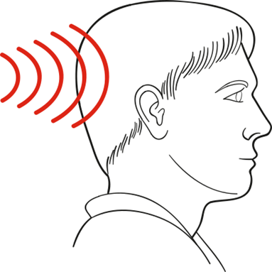
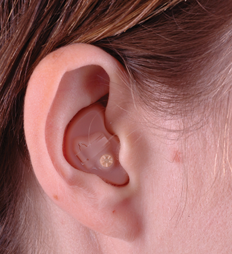
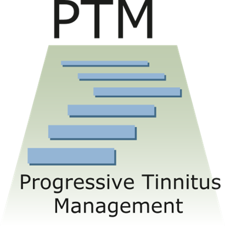

- Tinnitus basics
- What causes tinnitus?
- Living with tinnitus
- How can I manage my reactions to tinnitus?
- Can medications help?
- Can over-the-counter dietary supplements help?
- What methods have good research evidence?
- Does my tinnitus make it harder for me to hear?
- What if I need more help?
- What should I do about my tinnitus?
- What is Progressive Tinnitus Management (PTM)?
Tinnitus Basics
What is tinnitus?
Tinnitus is humming, ringing, buzzing, or other sounds in the ears or head.

How do you pronounce “tinnitus”?
“ti-night-us” or “tin-uh-tus” - either is correct.

The most common cause of tinnitus is exposure to loud sound. Tinnitus can also be caused by head injury, medications, ear wax and many other causes. For many people it is impossible to know the exact cause of tinnitus.
Is there a cure for tinnitus?
A “cure” would be some way to make the tinnitus sound stop. Right now, there is no safe and consistent way to quiet tinnitus. However, there are many ways to feel better without making tinnitus quieter.
How can I feel better without making my tinnitus quieter?
You can feel better by learning how to manage your reactions to tinnitus.
The skills in this program are designed to help you manage your reactions to tinnitus. Below is a short summary of these skills.
- Sound can be used in many different ways to manage reactions to tinnitus. You can learn to develop your own custom plan for using sound to help you any time tinnitus is a problem.
- Deep breathing, imagery, and guided meditation can help you relax. Feeling relaxed can help you cope with your tinnitus.
- Pleasant activities can help you enjoy life and help you get your mind off of your tinnitus.
- What you think affects how you feel. You can change the way you think about your tinnitus. With practice, changing your thoughts can help you feel better.
- Managing sleep patterns can improve your ability to cope with tinnitus.
Medications used for tinnitus were developed for other problems like depression, anxiety, and trouble sleeping. Some of these medications can improve your mood.
A better mood can help to make tinnitus less of a problem. In rare cases medications may make tinnitus quieter. However, medications can also make tinnitus louder. Because of possible side effects, use caution with medications.
There are at least 50 over-the-counter supplements for tinnitus available for sale.
There is no evidence from controlled studies that any of these supplements work for tinnitus. Save your money and use methods that have good research evidence.
Only a few methods have been shown to help people with tinnitus feel better. These include cognitive behavioral therapy and different uses of sound. Hearing aids, education and counseling have also been shown to be helpful.
Many people have hearing problems along with tinnitus. Some people think that the tinnitus causes their hearing problems - which is not true.
Hearing problems are caused by hearing loss or problems processing sound. If you have tinnitus or hearing problems, you should have a hearing test.

Start by getting a hearing test (and hearing aids if needed). Hearing aids can help with a hearing problem by amplifying sounds.
Amplifying sounds can also help with tinnitus. Most people say they notice their tinnitus less when wearing hearing aids.
If you need more help, find an audiologist who has experience working with people who have tinnitus. Some audiologists use Progressive Tinnitus Management (PTM). The skills in this app are based on PTM.

PTM is designed to help people with different levels of need.
Some people with tinnitus only need a hearing test and answers to their questions.
For people who need more help PTM teaches ways to use sound to manage reactions to tinnitus. PTM also teaches how to change thoughts and feelings to cope with tinnitus. Audiologists and mental health providers teach these skills.